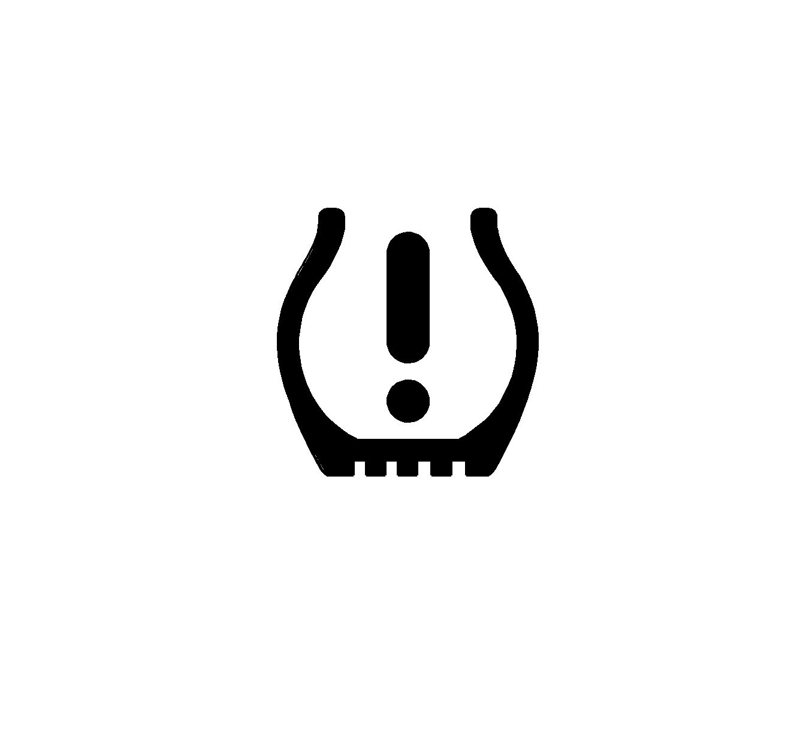
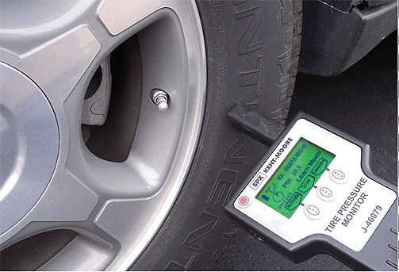
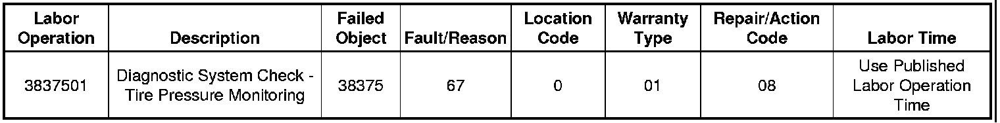

Tire Pressure Monitor - TPM System Overview: Overview
INFORMATIONBulletin No.: 07-03-16-004C
Date: April 26, 2010
Subject: TPM System Overview, Diagnosing Tire Pressure Monitor System (TPM) Concerns and TPM Frequently Asked Questions (FAQ)
Models:
2007 Buick Lucerne, Rainier
2006-2007 Cadillac DTS, Escalade Models
2007 Cadillac SRX
2006-2007 Chevrolet Avalanche, Impala, Monte Carlo, Suburban, Tahoe
2007 Chevrolet Equinox, Silverado, TrailBlazer
2006-2007 GMC Yukon Models
2007 GMC Acadia, Envoy, Sierra
2007 Pontiac Torrent
2007 Saturn AURA, OUTLOOK
2007-2009 Saab 9-7X
2008-2010 Saturn Models (except ASTRA)
2008-2010 HUMMER H2, H3
2008-2011 GM Passenger Cars and Trucks
Attention:
The information found in this bulletin is designed to be a single source for the majority of questions you may have about the Tire Pressure Monitoring (TPM) Systems found on General Motors Vehicles. While comprehensive, the bulletin is divided into sections, so after reviewing the whole document, you can reference just the section you need when further questions arise. A copy of this information may also be given to your customer as the "FAQs" section is written to assist you in explaining the most common misconceptions about the system in an easy to understand way. This bulletin does not apply to the Saturn Astra and does not apply to vehicles in Canada that are not equipped with Tire Pressure Monitoring.
Supercede:
This bulletin is being revised to add the 2011 model year. Please discard Corporate Bulletin Number 07-03-16-004B (Section 03 - Suspension).
Customer Concerns and Confusion
When a customer comments on a condition related to tire pressure monitoring, it is very important to distinguish between Check Tire Pressure / Low Tire Pressure conditions and Service Tire Monitor system issues. Understanding the difference between the two distinct conditions will help you distinguish between normal system operation (tire needs air) and a system malfunction.
There are two important differences between a Check Tire Pressure / Low Tire Pressure message/light and a Service Tire Monitor message light:
- A Check Tire Pressure / Low Tire Pressure message/light will stay on solid and no system codes are set. The TPM system is operating as designed. Correcting the tire pressure will resolve the issue.
- A Service Tire Monitor message/light will blink and system codes WILL set. There is a condition that should be diagnosed and corrected.
Tire Pressure Light

Service Tire Monitor System (light blinks, then stays on)
The Tire Pressure Light will blink for about one minute and a Service Tire Monitor message will be displayed when a system malfunction occurs. For example: If one or more tire pressure sensors does not transmit information for 18 minutes of driving, the TPM system WILL set a code, display a message, and BLINK the light for about a minute, after which the light will stay on solid for the remainder of the ignition cycle. If the system fault is intermittent, the message/light may also be intermittent - on during some ignition cycles, off during others.
Low Tire Pressure Warning (light stays on solid)
If the TPM system detects a tire pressure below the threshold, the Check Tire Pressure message and the Tire Pressure Light will come on and stay on. The message and light may be intermittent in nature, especially during cold weather.
Conditions That Will Cause the Low Tire Pressure Warning Message/Light to Display:
- The tire may have picked up a road hazard and/or have a slow leak.
- The tire pressure may not have been checked in the past six months.
- The air pressure in a cold tire may be at the pressure where the system is required to warn the driver. However, that same tire will rise in temperature and pressure as the customer drives, causing the message and light to go out.
- The tires may have been rotated, pressures adjusted, and the new tire positions were NOT re-learned into the vehicle. This can occur on vehicles that have two different placard pressures for front and rear tires.
- There may be a slow leak in one of the wheel and tire assemblies (Valve Stem, Wheel Rim, or Aluminum Wheel Porosity Leak). If this condition is found, please refer to bulletin:
- #05-03-10-003F - Low Tire Pressure, Leaking Cast Aluminum Wheels (Repair with Adhesive Sealant)
- #04-03-10-001F - Info - Tire Puncture Repair Procedures for all Cars and Light Duty Trucks
The Effect of Outside Temperatures on Tire Pressures
Important
As a rule of thumb, tire pressure will change about 7 kPa (1 psi) for every 6°C (10°F) decrease in temperature - dropping when it gets colder outside, rising when it gets warmer.
Tire pressure should be set to the specified placard pressure at the lowest seasonal temperature the vehicle will encounter during operation.
The correct action to avoid a Check Tire Pressure message due to extreme temperature changes is to do the following:
- Use an accurate, high quality tire pressure gauge.
- Re-learn the TPM sensors and adjust the tire pressure to the placard values after every tire rotation.
- Let the vehicle sit and adjust the tire pressure to the specified value when the tire temperature is at the lowest expected temperature.
- Never set the tire pressure below the placard value regardless of tire temperature or ambient temperature.
Important
On extremely cold days, if setting the tire pressure when the vehicle has been indoors, it may be necessary to compensate for the low outside temperature by adding 21-27 kPa (3-4 psi) more than the placard pressure. At some later time, when convenient and when the tires are cold (outdoors), the pressure should be re-checked and adjusted to the placard pressures if necessary.
Using the TPM Tool
TPM Tool J 46079 Software Updates and Hardware Update Kit
The J 46079 TPM tool is a valuable aid in diagnosing system faults with TPM systems. It is a software-driven tool that REQUIRES periodic updates in order to work on new model cars and trucks. Failure to update the tool with the latest software version may result in possible misdiagnosis.
TPM Software Version 3.5 has recently been shipped to each GM dealership in the J 46079-30 TPM update kit. All future TPM software updates will be posted in GM DealerWorld (U.S) or the GMinfoNET (Canada) as needed. Under the Support tab, access "TPM Downloads."
This update consists of two parts:
- A hardware update kit that consists of a custom rechargeable battery pack, battery cover with charging terminals, and a charging cradle with a smart charger where the whole tool will fit into the cradle for charging (same concept as a cordless phone). This hardware update substantially increases the life of the batteries and will assure that the TPM Tester always has full battery capacity.
- The software update will add new vehicles and also improve the speed of the tool's read-back ability and accuracy.
Sensor transmission signal strength is displayed in the upper left corner of the main display next to the tool's battery level display. When the tool is used in both activate or scan mode, it will receive the sensor's transmission and indicate its signal strength. It is important to note the sensor's transmission signal strength since it is a good indication of an accurate diagnostic.
TPM Tool J 46079 User Tips

Diagnostic Tip
The placement of the TPM Tester's antenna when activating a sensor is critical, especially with the latest software update. When activating a sensor, the antenna tip of the TPM Test J 46079 must be placed on the sidewall, perpendicular to the tire, and close to the valve stem (see photo above). This will assure proper activation of the sensor. If the antenna of the TPM Tester is placed either on the valve stem or on the wheel itself, the tool may not properly activate the sensor, causing improper diagnosis.
Diagnostic Tip
If you encounter a sensor that does not respond when activated by the tool, try activating another sensor that responded previously. This will help you determine if the tool is able to activate the sensor or if you have a problem with one particular sensor.
Diagnostic Tip
When using the tool during a sensor learn procedure, use the "Activate" soft key on the tool. Press the key for one second then release and the tool will perform an LF (low frequency - 125 kHz) activation cycle. You do not have to hold the key until the vehicle acknowledges. Holding the key will just reduce battery life. The LF activation of the sensors wakes them up and forces them to transmit their IDs immediately. This allows a much shorter sensor learn procedure than using the Delta P method.
Warranty Information
GM is very concerned about customer safety and tire performance. Anytime a customer brings a GM vehicle in for a tire or tire pressure monitoring concern, we encourage our dealers to perform a complete check of tire conditions, pressures, and the TPM system if necessary. Under normal circumstances, the condition of tires, TPM reprogramming during tire rotation, road hazard repairs, and checking/maintaining tire pressure are the responsibility of the vehicle owner. GM Dealers should encourage customers to inspect/check and maintain their tires and tire pressure on a regular monthly basis.
The tires and the tire pressure monitoring system are covered by the vehicle bumper to bumper warranty for manufacturing defects. It is GM's responsibility to perform repairs when a defect exists. If no defect exists, the customer should be responsible for the tire/system check.
GM does not cover the normal inspection and maintenance of tires and tire pressure. The use of this labor operation E0716 is intended to identify system defects and verify proper operation.
Warranty Information (excluding Saab U.S. Models)
E0716 - Diagnostic System Check - Tire Pressure Monitoring This labor operation should be used to check proper TPM system operation when a customer brings their vehicle into the dealership with a Service Tire Monitor System message/light (blinks on startup, codes in system).
If a customer comments on a Check Tire Pressure / Low Tire Pressure message/light (light was on steady - no flashing), the tires should simply be inflated to the proper pressure - this is not a warrantable repair.
E0719 - Washer, Lower Tire Pressure Warning Sensor Replacement This labor operation should be used whenever the rubber grommet is replaced.
E0722 - Tire Pressure Indicator Sensor Replacement This labor operation should only be used when a System Malfunction has been confirmed (by labor operation E0716) and the Diagnostic Trouble Code (DTC) corresponds to a Sensor Fault (DTCs C0750, C0755, C0760 and C0765).
For vehicles repaired under warranty, use:
Warranty Information (Saab U.S. Models)

For vehicles repaired under warranty, use the table above.

Disclaimer